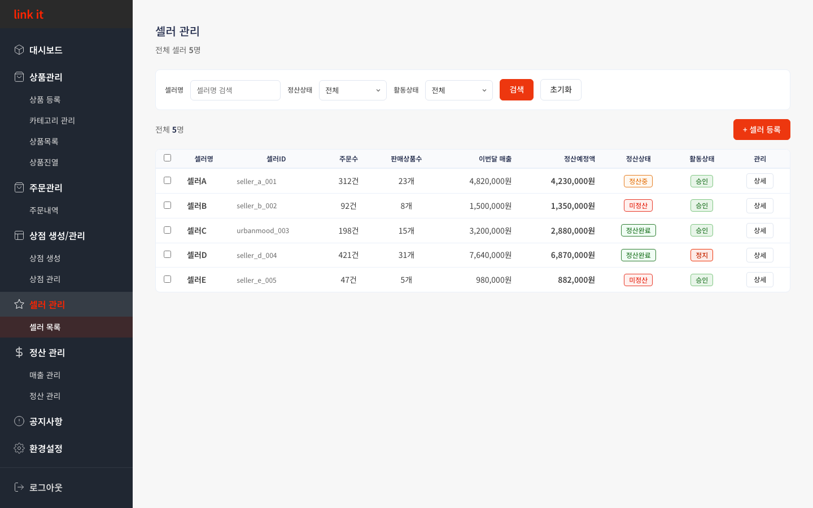
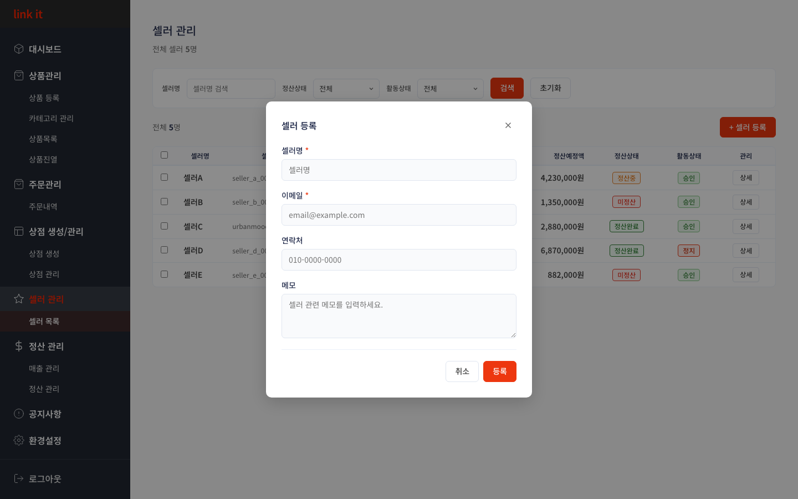
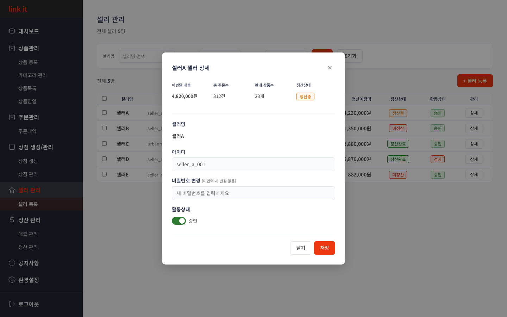

CHAPTER 5
셀러 관리
목록 조회 · 셀러 등록 · 상세 수정
5.1
셀러 목록 조회 & 검색 필터
전체 셀러를 한눈에 확인하고, 셀러명·정산상태·활동상태로 원하는 셀러를 빠르게 찾습니다.

1
2
3
사용 방법
1
셀러명·정산상태·활동상태로 검색
필터에서 셀러명 입력 또는 정산상태(미정산·정산중·정산완료), 활동상태(승인·정지) 드롭다운을 선택 후 [검색]을 클릭합니다. [초기화]로 전체 목록으로 돌아옵니다.
2
배지로 정산·활동 상태 파악
정산상태(미정산·정산중·정산완료)와 활동상태(승인·정지) 배지로 각 셀러의 현재 상태를 즉시 확인합니다. 이번달 매출과 정산예정액도 같은 행에서 확인됩니다.
3
[상세] 버튼으로 셀러 정보 확인
각 행 오른쪽 [상세] 버튼을 클릭하면 세부 정보와 계정 수정 화면이 열립니다.
💡 정산상태 배지 의미
미정산 — 정산 미처리 / 정산중 — 처리 진행 중 / 정산완료 — 처리 완료
5.2
새 셀러 등록
새로운 셀러를 시스템에 등록합니다. 셀러명과 이메일은 필수이며, 등록 후 목록에 즉시 반영됩니다.

1
2
3
사용 방법
1
[+ 셀러 등록] 클릭
목록 화면 오른쪽 상단의 [+ 셀러 등록] 버튼을 클릭하면 등록 팝업이 열립니다.
2
셀러명·이메일 입력 (필수)
셀러명(*)과 이메일(*)은 필수 항목입니다. 연락처와 메모는 선택 항목입니다. 입력한 이메일이 해당 셀러의 로그인 아이디가 됩니다.
3
[등록]으로 완료
입력 완료 후 [등록]을 클릭합니다. [취소] 또는 ✕로 닫으면 변경 없이 닫힙니다.
5.3
셀러 상세 확인 & 정보 수정
셀러의 매출·주문·정산 현황을 확인하고, 아이디·비밀번호·활동상태를 수정할 수 있습니다.

1
2
3
사용 방법
1
매출·주문·정산 현황 확인
팝업 상단에서 이번달 매출, 총 주문수, 판매 상품수, 정산상태를 한눈에 파악합니다.
2
활동상태 토글로 승인·정지 전환
토글 클릭으로 승인↔정지 상태를 전환합니다. 아이디와 비밀번호도 이 화면에서 수정할 수 있습니다. 비밀번호는 입력 시에만 변경됩니다.
3
[저장]으로 변경사항 반영
[저장] 클릭 즉시 목록에 반영됩니다. [닫기] 또는 ESC로 닫으면 변경사항이 저장되지 않습니다.
←
이전 챕터
4. 상점 생성/관리
CHAPTER 5 / 8
다음 챕터
6. 정산관리
→